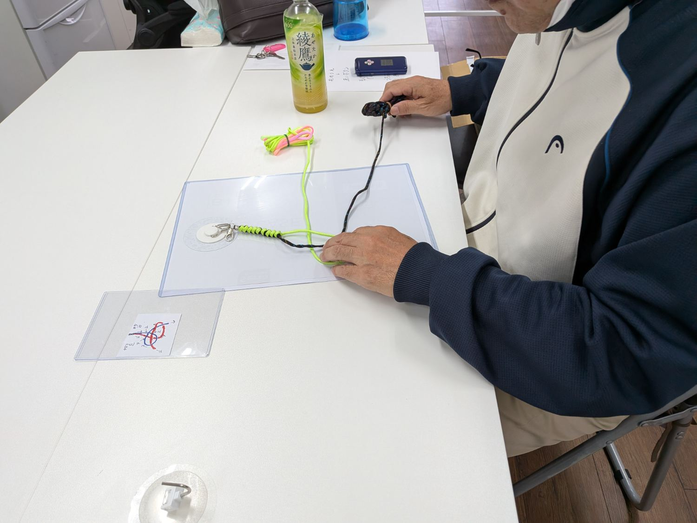
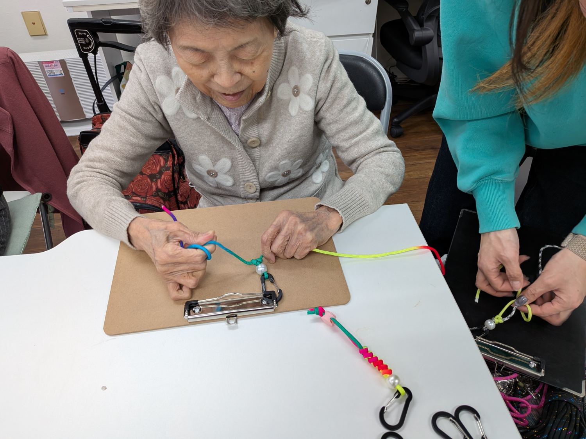
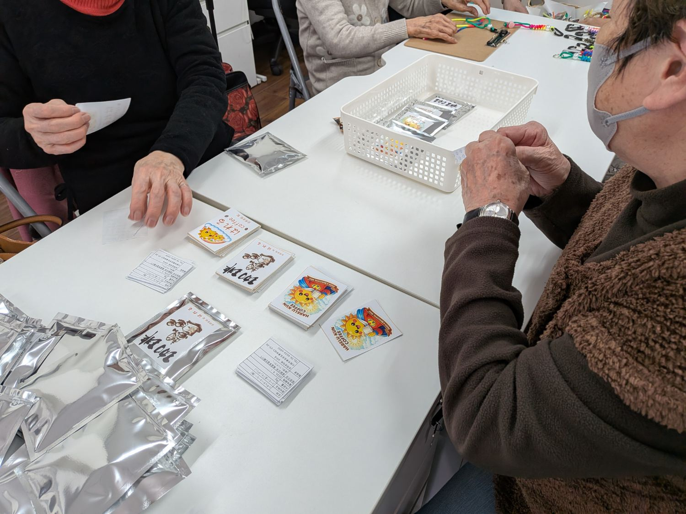
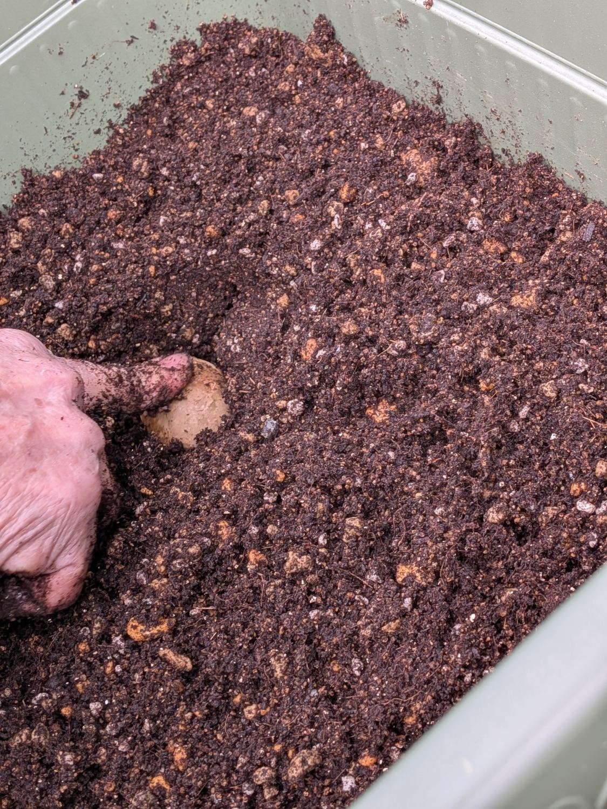
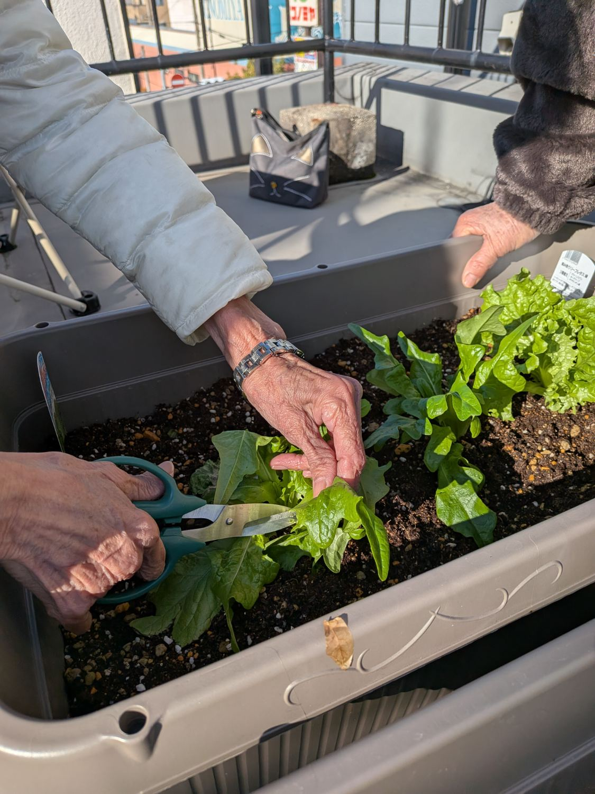
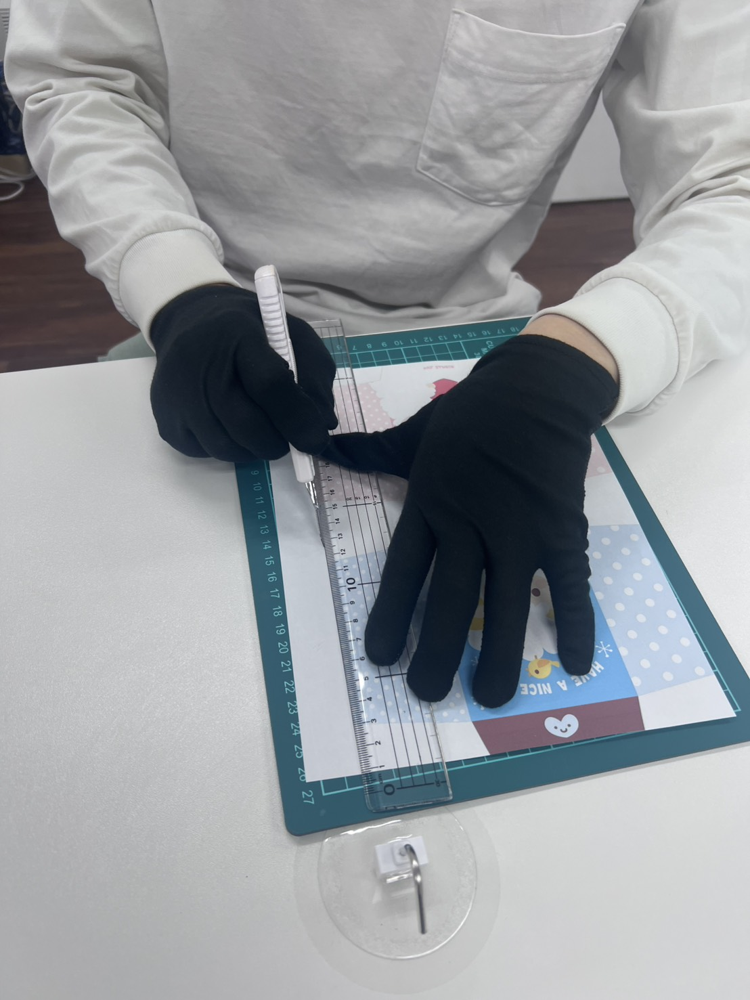
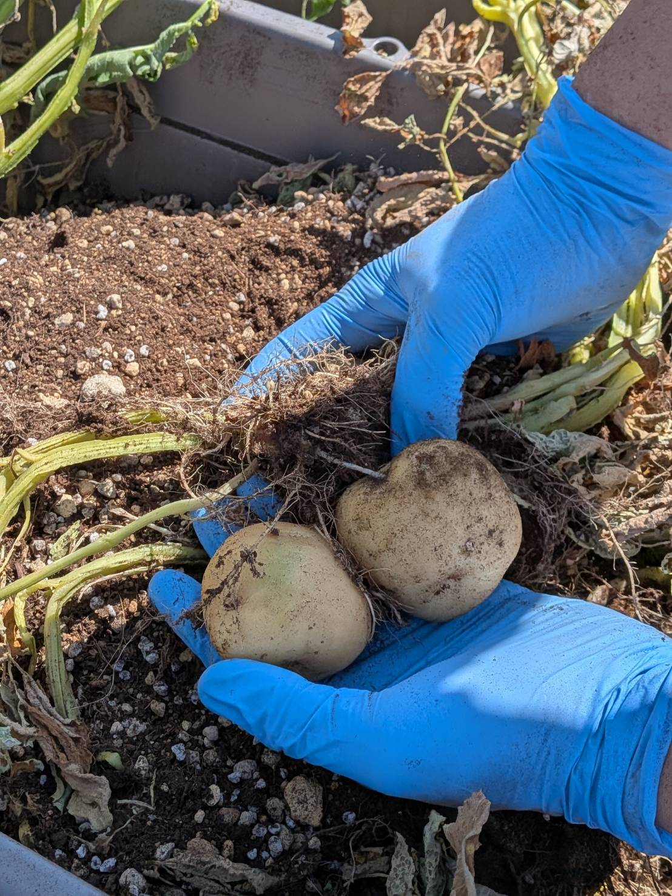

写真は順次差し替えていきます。掲載には必ず利用者さんの同意をいただいています。
もっと知りたい方は、ぜひ一度見学にお越しください。
はれるの空気を、実際に感じていただけます。
日差しの入る作業室、屋上の緑、お昼のざわめき。
言葉にしきれない空気を、すこしずつお届けします。







写真は順次差し替えていきます。掲載には必ず利用者さんの同意をいただいています。
もっと知りたい方は、ぜひ一度見学にお越しください。
はれるの空気を、実際に感じていただけます。